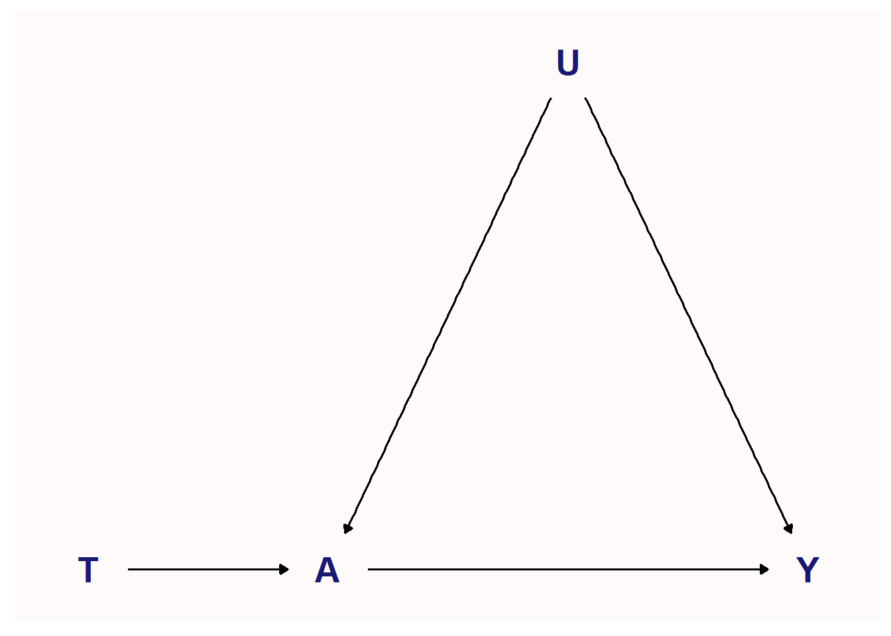

[conflicted] Will prefer dplyr::filter over any other package.
scm_9.1<-list()scm_9.1<-within(scm_9.1, { coords <-list(x =c(`T`=1, A =2, U =3, Y =4),y =c(`T`=1, A =1, U =2, Y =1)) dag <-dagify( A ~`T`+ U, Y ~ A + U,coords = coords) plot <- fciR::ggp_dag(dag)})
scm_9.1$plot

Figure 9.1: Instrumental Variable for the Effect of A on Y
We enlist the following notation for this chapter. Let \(Y(t,a)\) be the potential outcome for \(Y\) assuming we set \(T=t\) and then \(A=a\).
We assume consistency \(E(Y(t) \mid T=t)= E(Y \mid T=t\))
We assume exclusion \(Y(t,a)=Y(a)\)
Lets say that participants to treatment \(T\) may comply or not and let \(A\) be the treatment actually taken. That is \(A=1\) means that the treatment was taken by the participant. \(A\) is therefore a post-randomization event.
When \(A\) does not equal \(T\) there is 2 historical methods:
as-treated: Compare $E(Y A=1) with $E(Y A=0)
per-protocol: We let \(Z=1\) if \(A=T\) and use ordinary stratification on \(Z=1\) to compare \(E(Y \mid T=1, Z=1)\) with \(E(Y \mid T=0, Z=1)\)
\(Z=1\) is not a randomization event since it uses observed measurements after they occur. As a result \(Z\)cannot be expected to balance across 2 treatments groups. For example sicker patients could alwyas comply but healthy ones might. In thsi case we have \(T=1, A=1\) for the sicker patient but the healthy patients would be a mix of \(T=1, A-1\) and \(T=1, A=0\).
For these reasons, many studies rely on the intent-to-treat effect (ITT) \(E(Y \mid T=1) - E(Y \mid T=0)\). This equates to the causal effect
\[
ITT = E(Y(1,A(1))) - E(Y, A(0, 0)))
\]
9.1 Complier Average Causal Effect and Principal Stratification
9.1.1 Principal Stratification
Principal stratification classifies participants according to the potential occurence of a post-randomization event. We define 4 principal strata of participants according tottheir potential outcome \(A(t)\).
never-taker: \(A(0)=A(1)=0\). Will not take the treatment regardless of randomized assignment.
always-taker: \(A(0)=A(1)=1\). Will not take the treatment regardless of randomized assignment.
complier: \(A(0)=0, A(1)=1\), i.e. \(A(t)=t\). Will take the treatment as required.
defier: \(A(0)=1, A(1)=0\), i.e. \(A(t)=1-t\). Will refuse to take the treatment as required.
Let \(C\) indicate a complier, i.e. that \(A(t)=t\). Then since
\(T\) is a randomized, i.e. \(Y \perp\!\!\!\perp T \mid C\)
\(C\) is a pre-randomization variable, i.e. \(T \perp\!\!\!\perp C\)
\(Y(t,a) = Y(a)\)
it is reasonable to assume
\[
Y(a) \perp\!\!\!\perp T \mid C
\]
9.1.2 Complier Average Causal Effect
The complier average causal effect (CACE) is defined as the average effect of treatment (ATT) in the compliers. That is
The equation shows CACE as a stratified treatment effct, but \(C=1\) defines a principal stratum instead of an ordinary one.
We can estimate CACE assuming exclusion and no defiers. Assuming no defiers implies
\[
E(Y \mid T=1, C=0) = E(Y \mid T=0, C=0)
\]
because no defiers implies that \(C=0\) includes only never-takers and always-takers and these 2 groups act the same way regardless of what \(T\) is. In addition, exclusion ensures that randomization of \(T\) cannot affect the outcome of the never-takers and always-takers since \(Y \perp\!\!\!\perp T \mid A\).
To estimate the ATT using the instrumental variable, \(T\), we introduce structural nested mean models.
The linear structural nested mean model is
\[
E(Y - Y(0) \mid A, T) = A \beta
\]
\(Y-Y(0)\) is assumed to be mean indedpendent of \(T\) given \(A\), that is \(E(Y-Y(0) \mid A, T) = E(Y-Y(0) \mid A)\) (see p. 22). This therefore implies that there is no defiers as they create a dependency on \(T\). It also implies that *any effect modifiers of \(Y-Y(0)\) is balanced across \(T=0\) and \(T=1\) groups.
The non-causal linear model is using \(\overrightarrow{D}=\left[1, A, T, A \cdot T \right]\) which is a function of \(A\) and \(T\)
\[
E(Y \mid A,T)=D \eta
\]
therefore
\[
D \eta - A \beta = E(Y(0) \mid A, T)
\] and so
\[
E_{A \mid T} (D \eta - A \beta) = E(Y(0) \mid A, T)
\]
The solution for \(\eta\) is found using the method of chapter 2, section 2.3.
and the function as found on p. 164 is modified to allow the bootstrapping with many iterations by setting IV to NA where the denominator is too small.
func_instr_vars <-function(data, formula = Y ~ A +`T`, exposure.name ="A",instrument.name ="T", tol = .Machine$double.eps^0.5) { outcome.name <-all.vars(formula)[[1]]# estimate the ITT dat0 <- data[, instrument.name] ==0 dat1 <- data[, instrument.name] ==1 ITT <-mean(data[dat1, outcome.name]) -mean(data[dat0, outcome.name])# estimate the denominator of the CAE and ATT with equation (9.5) denom <-mean(data[dat1, exposure.name]) -mean(data[dat0, exposure.name]) msg <-sprintf("The variable \'%s\' is a weak instrument. Typically, no analysis should done with a weak instrument.", instrument.name) assertthat::assert_that(abs(denom) >= tol, msg = msg) IV <- ITT / denom out <-c("ITT"= ITT, "IV"= IV)# output that can be used by rsample::bootstrapsdata.frame(term =names(out),estimate = out,std.err =NA_real_ ) }
with the results
whatif.est <-func_instr_vars(whatif, formula = Y ~ A +`T`, exposure.name ="A", instrument.name ="T")stopifnot(all(abs(whatif.est$estimate -c(0.007352941, 0.27777778)) <1e-6))whatif.est
term estimate std.err
ITT ITT 0.007352941 NA
IV IV 0.277777778 NA
and using only 100 boots to estimate the CI we can use instr_vars from fciR which gives the correct result
fciR::instr_vars(whatif, formula = Y ~ A +`T`, exposure.name ="A",instrument.name ="T")
term estimate std.err
ITT ITT 0.007352941 NA
IV IV 0.277777778 NA
but it is difficult to replicate in bootstrapping . . . this is the closest found using seed = 514229 which has wide intervals. But this result is obtained by playing with the seed.
set.seed(514229) # fibonacci primewhatif.out <- whatif |> rsample::bootstraps(times =100, apparent =FALSE) |>mutate(results = purrr::map(.data$splits, function(x) { dat <- rsample::analysis(x)func_instr_vars(dat, formula = Y ~ A +`T`, exposure.name ="A",instrument.name ="T", tol =1e-6)})) |> rsample::int_pctl(.data$results, alpha =0.05)
Warning: Use of .data in tidyselect expressions was deprecated in tidyselect 1.2.0.
ℹ Please use `"results"` instead of `.data$results`
Warning: Recommend at least 1000 non-missing bootstrap resamples for terms:
`ITT`, `IV`.
whatif.out
# A tibble: 2 × 6
term .lower .estimate .upper .alpha .method
<chr> <dbl> <dbl> <dbl> <dbl> <chr>
1 ITT -0.147 0.00770 0.158 0.05 percentile
2 IV -6.19 -0.0985 6.04 0.05 percentile
and we can also do it usually fciR::instr_vars().
whatif.out <- fciR::boot_est( whatif, fciR::instr_vars, times =100, seed =514229, alpha =0.05,transf ="identity", terms =NULL, formula = Y ~ A +`T`, exposure.name ="A", instrument.name ="T")whatif.out
# A tibble: 2 × 6
term .lower .estimate .upper .alpha .method
<chr> <dbl> <dbl> <dbl> <dbl> <chr>
1 ITT -0.147 0.00770 0.158 0.05 percentile
2 IV -6.19 -0.0985 6.04 0.05 percentile
We compute the estimator for the linear, loglinear and logistic SNMM using the Double What-If Study. The functions are in the fciR package and can be consulted as usual by using F2 on the function.
The jacknife function from the package resample is replaced by using the loo_cv from the rsample package. This function creates n sets of data, with n being the nb of rows in the data, where 1 row is left out for every set. This is the same as a jackknife.
Using the rsample package offers a more versatile and modern way of working with R as it is the tidyverse way of coding. In addition, the author of resample mentions that he has stopped maintaining the resample package and recommends using rsample.
See STA 430 for an easy to understand explanation on how to compute the standard error of a jackknife.
dwhatif.instr.lin <- fciR::instr_linear(dwhatif, formula = VL1 ~ A *`T`,exposure.name ="A", instrument.name ="T")dwhatif.instr.lin
term estimate std.err
1 beta -0.4092717 NA
2 E(Y(0)|A=1) 0.6400410 NA
3 E(Y|A=1) 0.2307692 NA
4 E(Y-Y(0)|A=1) -0.4092717 NA
5 log(E(Y|A=1))-log(E(Y(0)|A=1)) -1.0201140 NA
6 logit(E(Y|A=1))-logit(E(Y(0)|A=1)) -1.7795147 NA
and we use a jackknife as discussed above. Since the confidence interval for the standard error is custom-made, we test it with the mtcars data set as follows.
# the function to compute the standard error and confidence intervalfunc_jack_ci <-function(x, alpha =0.05) { n <-length(x) nsample <- n -1 m <-mean(x) v <- (nsample / n) *sum((x - m)^2) se <-sqrt(v) ci <-qt(1- alpha, df = nsample)c(".lower"= m - ci * se, ".estimate"= m, ".upper"= m + ci * se)}mtcars.jack <-sapply(seq_along(mtcars$mpg), FUN =function(i) { x <- mtcars$mpg[-i]func_jack_ci(x)})
The functions are found in the fciR package as jack_run and jack_est. fciR::jack_run is the workhorse, just like fciR::boot_run. jack_est compute the inverse just like boot_est does.
func_jack_run <-function(data, func, alpha =0.05, ...) {# get the leave-one-out samples the_samples <- rsample::loo_cv(data)# estimates the effect measures the_results <- purrr::map_dfr(.x = the_samples$splits, .f =function(x) { dat <- rsample::analysis(x) df <-func(dat, ...) out <-c(df$estimate)names(out) <- df$term out })# compute the confidence interval for each term out <- purrr::map_dfr(.x = the_results, .f =~func_jack_ci(., alpha = alpha), .id ="term")# create the output dataframedata.frame( out,".alpha"= alpha,".method"="qt" )}
Fundamentals of Causal Inference, Babette A. Brumback, 2022
1 95% confidence interval
The difference in confidence intervals is because the author uses 1.96 = round(qnorm(0.95), 2) whereas fciR::jack_est uses an estimate confidence interval. See jack_ci code for details.